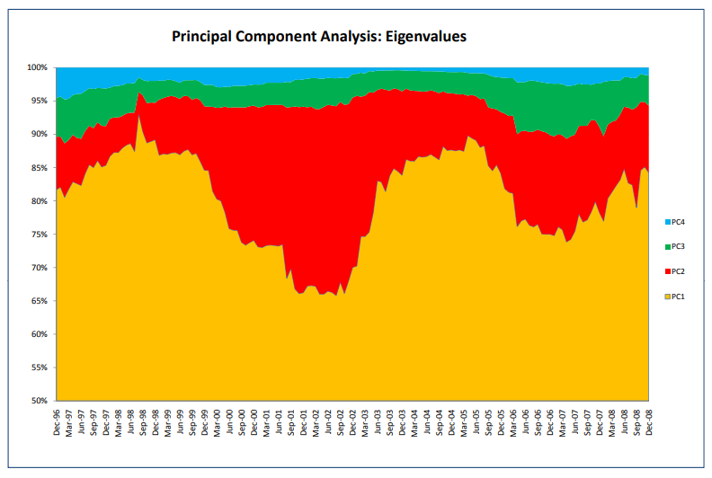
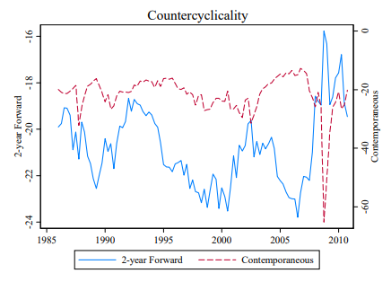
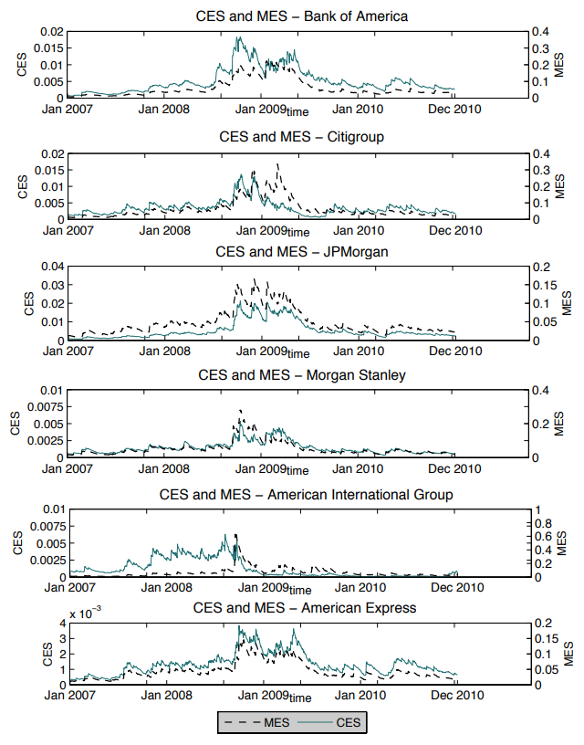
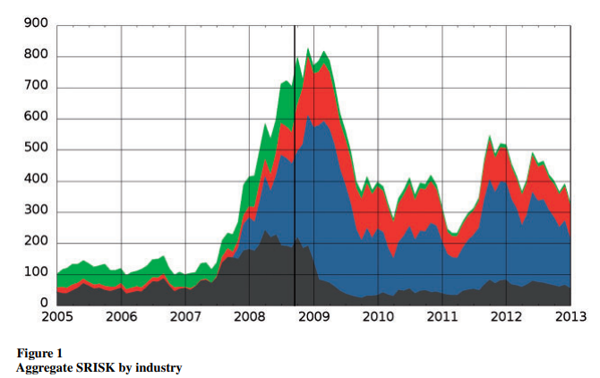
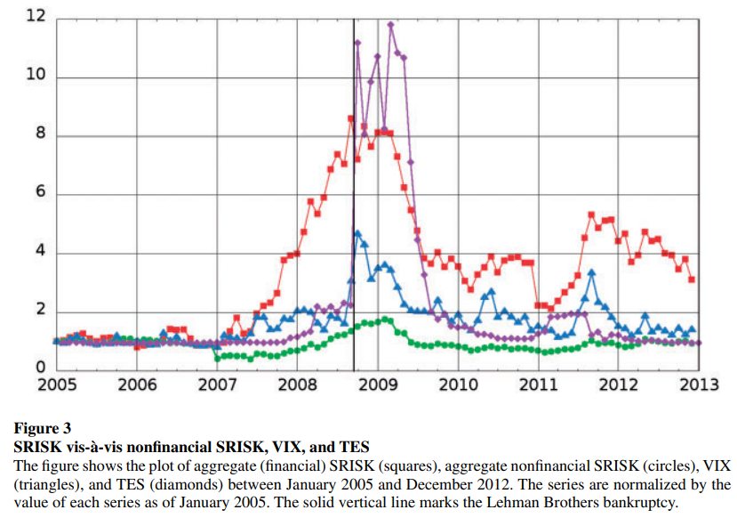
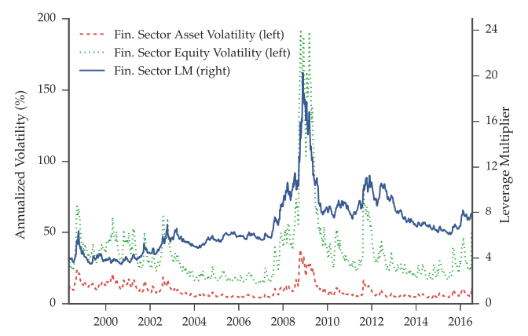
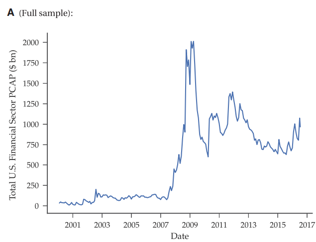
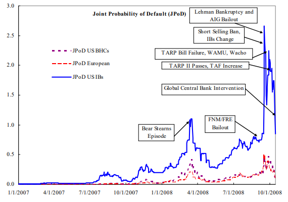
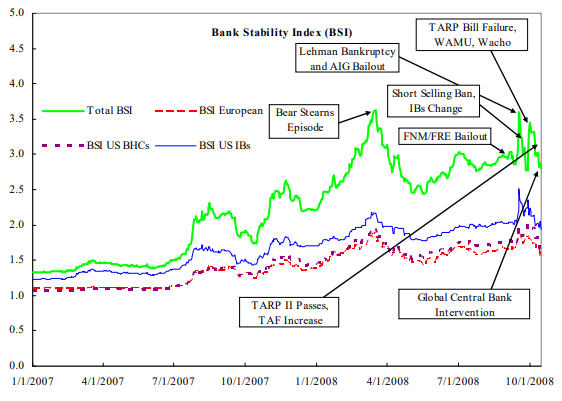
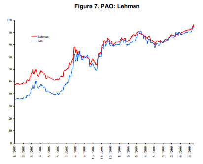

시스템 리스크 분석: (2-3) 금융기관 단면적 위험 측정방법
Systemic Risk Measure - Financial Institutions Cross-sectional Risk
서상원 (2018)
시스템리스크 측정 방법 중 다수의 금융기관이 동시에 위험에 처하게 되는 위험을 직접적으로 측정하는 법을 알아본다. 금융기관의 부도사건에 대한 다변수 확률분포에 대한 정보를 추출하고 이를 이용하여 시스템리스크를 측정한다.
금융기관 위험 측정방법
PCAS : Principal component analysis-based systemic risk indicator
은행, 증권회사, 보험회사 및 헤지펀드 등 주요 금융기관들의 주가 수익률간의 연계성(interconnectedness)을 PCA 기법을 이용하여 측정하는 방법
- 여러 금융기관들의 주가 수익률이 서로 긴밀하게 연계되어 있을수록 상위 몇개의 주성분으로 (분산을 기준으로 할 때) 전체의 변동을 잘 설명할 수 있게 됨
- \(h_n = \frac{\sum^n_{i=1}\lambda_i}{\sum^n_{i=1}\lambda_i}\)
- \(\lambda_i\)는 금융기관들의 주가 수익률 공분산 행렬의 \(i\)번째 특성치
- 금융기관간 연계성이 강할수록 \(h_n\)이 증가
- Kritzman et al.(2011)의 PCA-AR은 주식시장에서의 연계성을 측정한데 반해, Billio et al.(2012)는 금융기관간 연계성을 측정
- 개별 금융기관이 시스템리스크에 미치는 기여도
- \({PCAS}_{i,n} \equiv \frac{1}{2} \frac{\sigma^2_i}{\sigma^2_S} \frac{\partial\sigma^2_S}{\partial\sigma^2_i}|_{h_n \geq H} = \frac{\sigma^2_i}{\sigma^2_S} \sum^n_{k=1}W^2_{ik}\lambda_k|_{h_n} \geq H\)
- \(\sigma^2_i\)는 주가수익률의 분산으로 측정한 개별 금융기관의 위험
- \(\sigma^2_S\)개별 금융기관 주가수익률의 공분산의 합으로 측정한 금융시스템의 위험도
- \(W^2_{ik}\)는 금융기관 주가 수익률 공분산 행렬의 특성벡터로 이루어진 주성분 가중치 행렬 \(W\)의 \((i,k)\)번째 원소
- \(H\)는 금융기관간 연계성에 대한 임계치로서 \(h_n\)이 \(H\)를 상회할 경우 강한 연계성이 존재하는 것으로 판단
- 즉, PCAS는 개별 금융기관 위험도의 상대적 증가가 금융시스템의 상대적 위험도 증가에 미치는 영향을 민감도를 이용하여 측정

CoVaR: Co-Value-at-Risk
VaR(Value-at-Risk)(금융기관의 위험도를 측정하는 대표적인 지표)개념을 활용하여 시스템리스크를 측정
- 금융기관 \(i\)의 \(q\%\) 유의수준에서 \(VaR\)
- \(Pr[X^i \leq {VaR}^i_q] = q\%\)
- \(X^i\)는 금융기관 \(i\)의 손실규모를 나타내는 확률변수
- 금융기관 (또는 금융기관의 그룹) \(j\) 의 \(CoVaR\)
- \(Pr[X^j |C(X^i) \leq {CoVaR}^{j|C(X^i)}_q] = q\%\)
- \(C(X^i)\)는 금융기관 i가 손실허용한도인 \({VaR}^i_q\)를 넘어서는 손실을 보는 사건
- 금융기관 \(i\)로 인한 \(j\)의 위험도 변화
- \(\Delta{CoVaR}^{j|i}_q \equiv {CoVaR}^{j|X^i={VaR}^i_q}_q - {CoVaR}^{j|X^i={VaR}^i_{50}}_q\)
- 즉, 금융기관 \(i\)가 큰 손실을 보는 경우와 평균적인 경우에 금융기관 \(j\)의 위험수준의 차이
- 시스템리스크 관점에서 금융기관 \(i\)가 시스템리스크에 미치는 기여도를 측정하기 위해 \(j\)를 금융시스템으로 간주
- \(\Delta{CoVaR}^{system|i}_q \equiv {CoVaR}^{system|X^i={VaR}^i_q}_q - {CoVaR}^{system|X^i={VaR}^i_{50}}_q\)
- 반대로 금융기관을 \(j\), 시스템을 \(i\)로 하면, 금융기관이 시스템리스크의 변동에 따라 얼마나 영향을 받는지를 측정 (Exposure-CoVaR)/ 금융기관을 \(i\), \(j\)로 하면 Network-CoVaR

SES: Systemic expected shortfall
금융 시스템 위기가 발생한 경우에 개별 금융기관의 적정 자본수준대비 자본의 부족규모 예상치를 측정
- 가정 및 개념
- 시스템리스크: 시장 주가지수의 하락폭이 하위 5%를 넘는 경우로 전제
- MES: 시스템리스크가 발생하였을 때 해당 금융기관의 주가 수익률 하락폭의 기댓값
- 레버리지: ‘주식 시가총액’ 대비 ’장부가 자산 – 장부가 부채 + 주식 시가총액’의 비율로 측정
- SES 추정
- 금융위기 기간에 금융기관별 주가수익률 하락폭을 실현된 SES로 간주하고 이 실현된 SES를 다음과 같이 MES 및 레버리지에 대해 회귀
- \(SES_i = \alpha+ \beta MES_i + \gamma LVG_i + \delta'DUM\)
- \(DUM\)은 은행, 증권, 보험 등 금융기관의 종류를 나타내는 더미변수 벡터
- 이 회귀식을 통해 추정된 SES를 이용하여 미국의 100여개 금융기관에 대해 금융기관별 시스템리스크의 순위(rank)를 정함
- 금융위기 기간에 금융기관별 주가수익률 하락폭을 실현된 SES로 간주하고 이 실현된 SES를 다음과 같이 MES 및 레버리지에 대해 회귀
CES: Component expected shortfall
Banulescu and Dumitrescu(2015)
MES와 해당 금융기관의 비중의 곱
- 금융시스템 전체의 수익률은 다음과 같이 개별 금융기관의 수익률과 금융기관별 비중의 가중합으로 표현
- \(r_{mt}=\sum^n_{i=1}w_{it}t_{it}\)
- 금융시스템 전체의 수익률이 일정 임계치 C를 하회하면 시스템리스크가 발생한 것으로 정의
- 조건부 기대손실규모 (ES):
- \(ES_{mt-1}(C)=-E_{t-1}(r_{mt}|r_{mt}<C)\)
- MES, CES
- \(MES_{it} \equiv \frac{\partial ES_{mt-1}}{\partial w_{it}} = -E_{t-1}(r_{it}|r_{mt}<C)\)
- \(CES_{it} = w_{it}MES_{it} = -w_{it}E_{t-1}(r_{it}|r_{mt}<C)\)
- 즉, \(ES_{mt-1}= \sum^n_{i=1}CES_{it}\)
- MES 또는 SRISK 등이 금융기관의 규모를 감안하지 못하는데 반해, 이 CES 지표는 명시적으로 개별 금융기관의 중요도를 감안한다는 차이점이 있으며, SIFI의 식별 등에 유용한 정보를 제공

SRISK: Sytemic risk
금융 시스템 위기가 발생한 경우에 개별 금융기관의 자본 부족규모 예상치를 측정
\(SRISK_{it}=W_{it}[kLVG_{it}+(1-k)LRMES_{it}-1]\)
- \(W_{it}\)는 주식 시가총액
- \(k\)는 자산대비 적정 자기자본 비율
- \(LVG_{it}\)는 자산대비 자기자본 비율 \(A_{it}/W_{it}\)
- \(LRMES_{it}\)는 시스템리스크가 발생하였을 때 개별 금융기관의 다기간 주가수익률 하락폭의 기댓값
금융시스템의 불안정 수준: 개별 SRISK를 합산
- \(SRISK_{t} \equiv \sum^N_{i=1} max(SRISK_{it},0)\)
개별 금융기관의 위험수준
- \(SRISK\%_{it} = \frac{SRISK_{it}}{SRISK_{t}}\)
LRMES 측정 방법: GARCH-DCC 모형을 이용
개별 금융기관 주가수익률 \(r_{it}\)과 시장수익률 \(r_{mt}\) 간의 관계를 GARCH-DCC 모형을 이용하여 구성 \[\begin{equation*} \begin{bmatrix} r_{it} \\ r_{mt} \end{bmatrix} \sim \begin{pmatrix} 0, & \begin{bmatrix} \sigma_{it}^2 & \rho_{it}\sigma_{it}\sigma_{mt} \\ \rho_{it}\sigma_{it}\sigma_{mt} & \sigma_{mt}^2 \end{bmatrix} \end{pmatrix} \end{equation*}\]
여기서 변동성은 GJR-GARCH 모형을 이용하여 다음과 같이 가정
- \(\sigma_{it} = \omega_{v_i}+\alpha_{v_i}r^2_{it-1}+\gamma_{v_i}r^2_{it-1}\Gamma_{it-1}+\beta_{v_i}\sigma^2_{it-1}\)
- \(\sigma_{mt} = \omega_{v_m}+\alpha_{v_m}r^2_{mt-1}+\gamma_{v_m}r^2_{mt-1}\Gamma_{mt-1}+\beta_{v_i}\sigma^2_{mt-1}\)
- 여기서 \(\Gamma_{mt-1}\)은 \(r_{it-1}\)이 음(-)인 경우에 1을, 아닌 경우에 0을 가지는 변수
- \(\sigma_{it} = \omega_{v_i}+\alpha_{v_i}r^2_{it-1}+\gamma_{v_i}r^2_{it-1}\Gamma_{it-1}+\beta_{v_i}\sigma^2_{it-1}\)
DCC 모형을 위해 변동성으로 표준화한 수익률을 \(\epsilon_{it}\equiv \frac{r_{it}}{\sigma_{it}}, \epsilon_{mt}\equiv \frac{r_{mt}}{\sigma_{mt}}\)로 정의하여 상관계수 행렬을 구하면, \[\begin{equation*} R_t \equiv \begin{bmatrix} 1 & \rho_{it} \\ \rho_{it} & 1 \end{bmatrix} = diag(Q_{it})^{-1/2}Q_{it}diag(Q_{it})^{-1/2}, \\ \end{equation*}\] \[\begin{equation*} Q_{it} = (1-\alpha_{C_i}-\beta_{C_i})S_i+\alpha_{C_i} \begin{bmatrix} \epsilon_{it-1} \\ \epsilon_{mt-1} \end{bmatrix} \begin{bmatrix} \epsilon_{it-1} \\ \epsilon_{mt-1} \end{bmatrix}' + \beta_{C_i}Q_{it-1} \end{equation*}\]
- \(S_i\)는 \(\epsilon_{it}, \epsilon_{mt}\)간의 무조건부 상관계수행렬
2단계 QML 방법을 이용하여 모형 추정, 시뮬레이션 방법을 이용하여 LRMES에 대한 예측치를 산출
SES 지수는 역사적으로 시스템리스크를 경험한 사례가 있어야 추정이 가능하지만, SRISK는 시스템리스크를 경험한 사례가 없더라도 그 추정이나 예측이 가능하다는 장점이 있음


Structural GARCH
“레버리지” 효과를 반영할 수 있도록 GARCH 모형을 수정한 Structural GARCH 모형을 제안
- 금융기관의 자산수익률에 부정적인 충격이 발생하면 이로 인해 비대칭적으로 변동성이 증가할 뿐만 아니라 레버리지(즉, 자본 대비 부채 비율)가 증가하며 이 효과로 인해 자본의 수익률에 대한 변동성이 추가로 증가하기 때문
주요 식
- \(r_{Et}=LM_{t-1}r_{At},\)
- \(r_{At}=\sqrt{h_{At}\epsilon_{At}}, \epsilon_{At} \sim (0,1)\)
- \(h_{At}=\omega + \alpha \left( \frac{r_{Et-1}}{LM_{t-2}} \right)^2 + \gamma \left( \frac{r_{Et-1}}{LM_{t-2}} \right)^2 I_{r_{E_{t-1}}}+\beta h_{At-1},\)
- \(LM_{t-1} = \left[\Delta_{t-1}^{BSM}\times g^{BSM}\left(\frac{E_{t-1}}{D_{t-1}},1,\sigma^{f}_{At-1},\tau\right)\times \frac{E_{t-1}}{D_{t-1}}\right]^\psi\)
변수 설명
- \(r_{Et}\)는 주식 수익률, \(r_{A}\)는 관측불가능한 (시장가치) 자산 수익률
- 변동성은 GJR GARCH 과정을 따름
- \(LM\)은 레버리지 효과
- \(\Delta^{BSM}\)은 Black-Scholes-Merton 옵션모형에 따른 옵션델타
- \(g^{BSM}( \ \bullet \ )\)은 콜옵션가격함수의 역함수
주가의 변동성은 자산변동성 뿐만 아니라 레버리지 효과를 나타내는 \(LM\)에도 영향을 받음
- \(vol_t \left( \frac{dE_t}{E_t} \right) = LM_t \sigma_{At}\)
레버리지 효과를 도입하면 MES 추정치가 증가하는 효과가 있음
또한, Engle and Siriwardane(2014)는 새로운 시스템리스크 추정지표로서 예비적 자본규모(precautionary capital)을 제안
- 예비적 자본규모는 시스템리스크 사건이 발생하더라도 해당 금융기관의 자본이 부족하지 않도록 하는 적정 자본규모와 현재의 자본규모와의 차이


CIMDO: Consistent multivariate density optimizing
개별 금융기관들의 위험 확률(PoD; probability of distress)들로부터 CIMDO(consistent multivariate density optimizing) 기법을 활용하여 개별 금융기관들간의 위험 사건에 대한 결합분포를 구하고 이를 이용하여 여러 금융 불안정 지수들을 제안
- 설명을 위한 가정:
- 두 개의 금융기관 X와 Y, 금융기관 주가의 로그 수익률 각각 \(x,y\)
- \(q(x,y)\)는 두 수익률에 대한 사전(prior) 분포, \(p(x,y)\)는 두 수익률에 대한 사후(posterior) 분포
- 사후 분포는 두 분포의 cross-entropy를 최소화하도록 정함
- CIMDO 목적함수: \(C[p,q]= \int\int p(x,y) \ln \left[\frac{p(x,y)}{q(x,y)}\right]dxdy\)
- \(x\)(\(y\))가 임계치 \(d_x\)(\(d_y\))를 하회하면 금융기관 X(Y)에 위험 사건이 발생하는 것으로 가정
- 데이터로부터 경험적으로 추정한 위험 확률 \(PoD_x\)와 사후 분포는 다음과 같은 조건을 만족시켜야 사후 분포가 데이터와 일관성을 유지할 수 있음
- \(\int^{d_{x(y)}}_{-\infty}\int^{\infty}_{-\infty} p(x,y)dxdy=PoD_{x(y)}\)
- \(\int\int p(x,y)dxdy=1\)
- 이러한 조건을 만족시키면서 CIMDO 목적함수를 최소화시키는 사후 결합밀도함수
- \(p(x,y)=q(x,y)\exp\{-[1+\mu+\lambda_1I_{(-\infty,d_x)}+\lambda_2I_{(-\infty,d_y)}]\}\)
- \(\lambda_1\)과 \(\lambda_2\)는 각각 \(PoD_x\)와 \(PoD_y\)에 대한 일치성 조건에 관한 라그랑지 승수
- \(\mu\)는 확률밀도함수의 면적이 1이라는 조건에 대한 라그랑지 승수
Segoviano and Goodhart(2009)는 결합확률밀도함수를 이용하여 다양한 금융시스템 불안정 지수를 제시
JPoD - 금융시스템 내의 모든 금융기관들에서 동시에 위험 사건이 발생할 확률 (세 금융기관 X,Y,Z가 존재하는 경우) - \(JPoD\equiv \int^{d_x}_{-infty}\int^{d_y}_{-infty}\int^{d_z}_{-infty}p(x,y,z)dxdydz\)

BSI(banking stability index) - 적어도 하나의 금융기관이 위험할 때 위험 금융기관 수의 기댓값 (세 금융기관 X,Y,Z가 존재하는 경우) - \(BSI= \frac{P(X\leq d_x)+P(Y\leq d_y)+P(Z\leq d_z)}{1-P(X>d_x,Y>d_y,Z>d_z)}\)

PAO(probability that at least one bank becomes distressed)
- 특정 금융기관이 위험한 상황일 때 다른 금융기관 중 적어도 하나의 금융기관에서 위험 사건이 발생할 확률

DDM(distress dependence matrix)
- \(N\)개의 금융기관이 존재할 때 \(N\times N\) 행렬로서 그 \((i,j)\)번째 원소는 \(j\)번째 금융기관이 위험할 때 \(i\)번째 금융기관이 위험할 조건부확률로 위험 사건에 대한 금융기관간 연계성에 대한 정보를 나타냄
참고문헌
서상원. (2018). 시스템리스크의 측정과 관리: 서베이와 제언. 금융안정연구, 19(1), 131-232.
Acharya, V. V., Pedersen, L. H., Philippon, T., & Richardson, M. (2017). Measuring systemic risk. The review of financial studies, 30(1), 2-47.
Adrian, T., & Brunnermeier, M. K. (2011). CoVaR (No. w17454). National Bureau of Economic Research.
Banulescu, G. D., & Dumitrescu, E. I. (2015). Which are the SIFIs? A Component Expected Shortfall approach to systemic risk. Journal of Banking & Finance, 50, 575-588.
Billio, M., Getmansky, M., Lo, A. W., & Pelizzon, L. (2012). Econometric measures of connectedness and systemic risk in the finance and insurance sectors. Journal of financial economics, 104(3), 535-559.
Brownlees, C., & Engle, R. F. (2017). SRISK: A conditional capital shortfall measure of systemic risk. The Review of Financial Studies, 30(1), 48-79.
Engle, R. F., & Siriwardane, E. N. (2018). Structural GARCH: the volatility-leverage connection. The Review of Financial Studies, 31(2), 449-492.
Segoviano Basurto, M., & Goodhart, C. (2009). Banking stability measures.